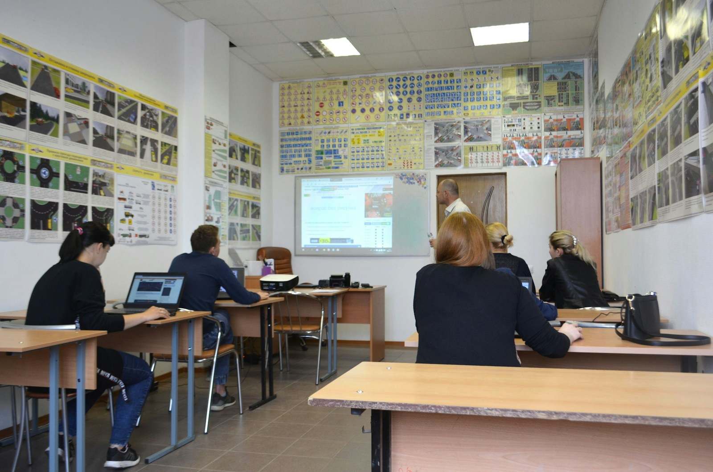

Donner un ordinateur à une association ou une école en Savoie et Haute-Savoie
Un ordinateur donné ne sert que s'il arrive en état de marche, données effacées, entre les mains de quelqu'un qui en a besoin. Voici ce dont les structures ont réellement besoin, ce que vous pouvez faire directement, et ce que nous ajoutons quand vous passez par nous.
Ce dont une association ou une école a besoin
- Un appareil qui fonctionne, avec son chargeur : une machine à réparer est une charge, pas un cadeau, pour une structure sans service informatique.
- Un système propre, sans vos comptes ni vos fichiers, prêt à être configuré pour un nouvel utilisateur.
- Un besoin réel : un poste pour l'accueil, un ordinateur pour un atelier numérique, une machine pour un foyer qui n'en a pas. Un don qui ne correspond à aucun besoin finit sur une étagère.
Donner directement : c'est possible
Vous connaissez une association, un centre social, une école ou une famille qui a besoin d'un ordinateur ? Donnez directement : c'est le chemin le plus court. Trois précautions : effacez vos données (voir notre guide), joignez le chargeur et les câbles, et demandez à la structure ce dont elle a réellement besoin avant d'apporter quoi que ce soit.

Passer par Réemploi 74 : ce que nous ajoutons
Quand vous ne savez pas à qui donner, ou que vous avez plusieurs appareils, nous faisons le lien entre votre matériel et les besoins du territoire, en y ajoutant ce qu'un particulier ne peut pas toujours faire :
- L'enlèvement gratuit dès trois équipements, en Savoie et Haute-Savoie, ou le dépôt à l'atelier de Cluses sur rendez-vous.
- L'effacement des données de chaque disque, avant tout test, selon la norme NIST 800-88, avec un certificat par disque envoyé sur votre code de suivi.
- Le diagnostic et la réparation : batterie, disque, mémoire, nettoyage, réinstallation d'un système à jour.
- La remise en service auprès d'une structure ou d'un foyer qui en a l'usage, localement.
- La traçabilité : une attestation de cession et un bordereau de traçabilité, disponibles depuis votre suivi.
Reçu fiscal : ce que nous pouvons et ne pouvons pas faire
Réemploi 74 est une activité d'entrepreneur individuel, pas une association : nous ne pouvons pas émettre de reçu fiscal. Nous remettons une attestation de cession et un bordereau de traçabilité. Un reçu fiscal reste possible lorsque le don est fait à une association d'intérêt général partenaire, qui le délivre elle-même : parlez-nous-en avant l'enlèvement, nous vous dirons si c'est possible pour votre lot.
Pour les entreprises et les collectivités
Le don d'un parc renouvelé suit les mêmes étapes, avec en plus l'inventaire par numéro de série et le bordereau d'enlèvement signé. Chaque disque reçoit son certificat d'effacement, ce qui répond à vos obligations sur les données que ces machines ont contenues. Pour un acheteur public, le matériel réemployé se comptabilise au titre de la loi AGEC. Détails sur la page entreprises et collectivités.
Ce que nous ne prenons pas en don
Le matériel hors service seul (qui ne démarre plus, écran brisé) ne peut pas être remis en service : il relève de la déchèterie ou d'un éco-organisme, ou vient en complément d'un lot fonctionnel pour ses pièces. Un appareil bloqué par un compte (verrouillage d'activation, gestion de flotte d'entreprise) reste inutilisable tant que le verrou n'est pas levé depuis le compte d'origine. La liste complète est sur la page ce que nous prenons.
Vous êtes une association, une école ou une structure sociale de Savoie ou de Haute-Savoie et vous avez besoin de matériel ? Écrivez-nous en décrivant l'usage prévu et le nombre de postes : nous vous tenons informés quand du matériel correspondant est remis en service.